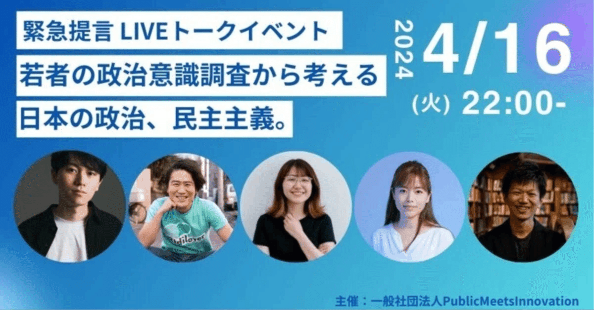

先日、PMI ThinkTankが進めている「政治に関する意識調査」の調査結果を元に、以下の3名の方をゲストにお招きしたパネルディスカッションをオンラインで開催しました。
登壇者
安部敏樹さん
株式会社Ridilover 代表
大空幸星さん
NPO法人あなたのいばしょ 理事長
能條桃子さん
NOYOUTHNOJAPAN 代表
アーカイブ
https://www.youtube.com/live/TePoiZORM7w?si=jZdhDhC7X7-ifPYh
ディスカッションは、PMI ThinkTankセンター長の田中佑典による、調査結果を元にした問題提起を起点にして行われ、各ゲストの方の経験や知見が融合した議論が展開されました。
若者の「支持政党なし」が多数を占める状況に対する各氏のコメント（引用）
政治への無関心と諦めは区別して議論するべき。諦めや無力感のリカバーはかなり大変なので早期に対応し、「なんとなく関心がない」状態のうちに若い世代に向けてアプローチをする必要がある。
安部敏樹さん
若者が「与党と野党の違いが意外とないよね」と見透かしている部分もあると思う。投票時に与党と野党の政策の違いを見つけようと思うと難しい側面がある。
大空幸星さん
「若者の支持政党なしが多数」なのは問題ではない。若者がちゃんと選挙に行き、浮動票として機能し、今の政治家に緊張感を与えられているかが大事。
能條桃子さん
当日のアジェンダ
「政治に関する意識調査」よりPMI作成「政治に関する意識調査」よりPMI作成「政治に関する意識調査」よりPMI作成「政治に関する意識調査」よりPMI作成「政治に関する意識調査」よりPMI作成「政治に関する意識調査」よりPMI作成「政治に関する意識調査」よりPMI作成
今後もPMI ThinkTankでは、「政治に関する意識調査」に関連したイベントの開催、ペーパーの公表を進めていきます。